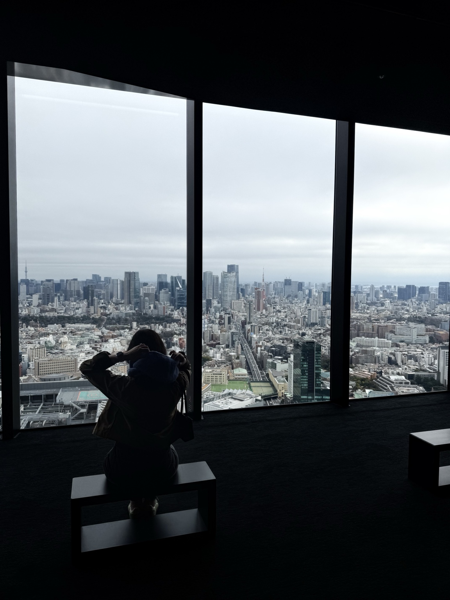

KNITTING
Proof that I am apparently capable of sitting still if you give my hands a sufficiently complicated task.
KIRSTEN / ELSEWHERE / SEPTEMBER 2026
A running list of things that have absolutely nothing to do with my PhD. And a reminder to myself that not everything I write needs to be academic.

Subject to change without notice.
01 / LISTENINGMarianne — Fontaines D.C.
02 / WATCHINGAdults
03 / READINGTao Te Ching
04 / WANTINGSongmont Hobo Bag
05 / EATINGPesto. An unreasonable amount of pesto.
06 / CONSTANTDiet Coke
things I have had too many thoughts about, put here so I don't inflict them on innocent bystanders.
The things that have survived enough phases to qualify as core lore.
Proof that I am apparently capable of sitting still if you give my hands a sufficiently complicated task.
Not currently obsessed. Permanently institutionally committed.
I will tolerate an extraordinary amount of inconvenience in exchange for being somewhere I haven't been before.
Toy Australian Shepherd. Very small. Disproportionate influence over household decision-making.
The actual throughline.